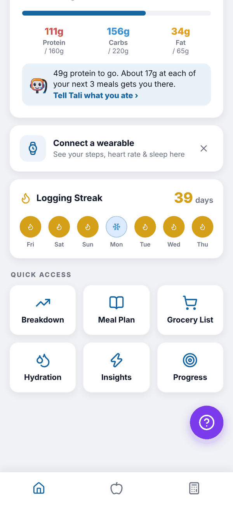
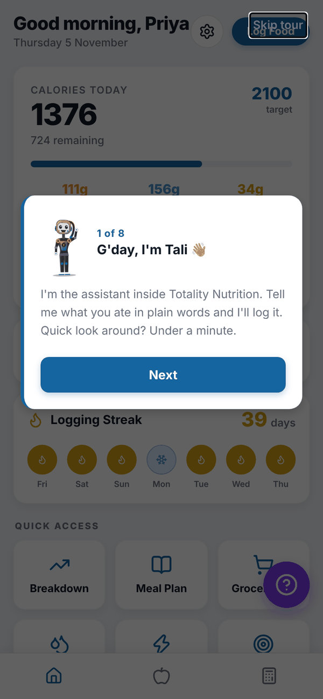
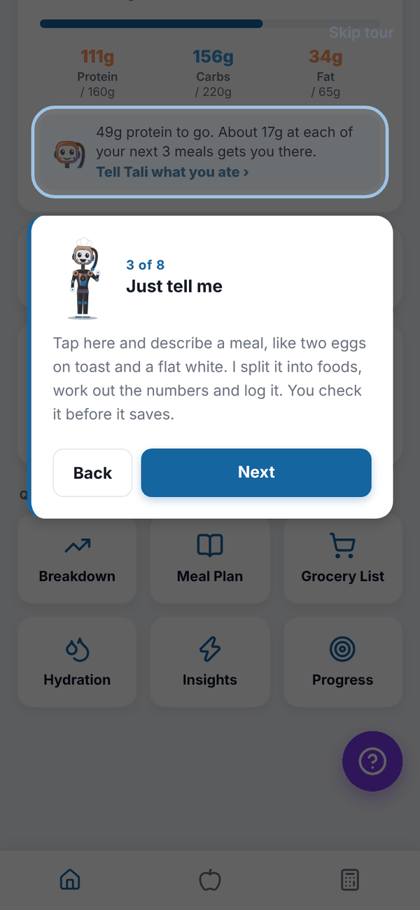
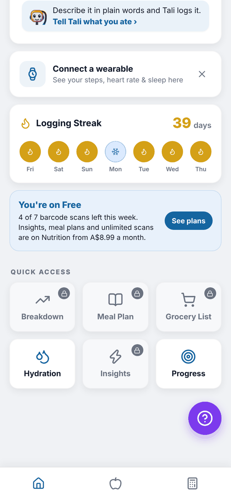
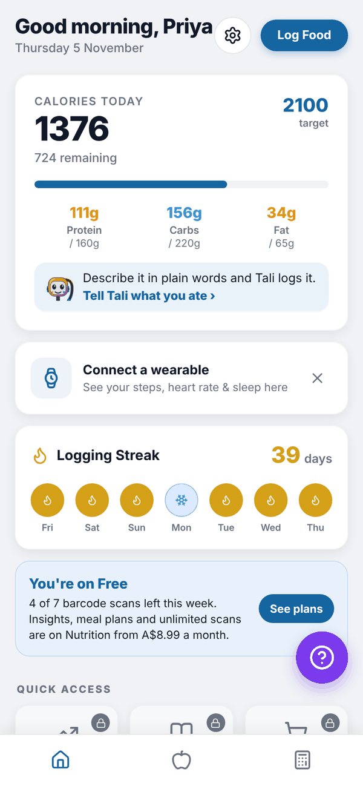
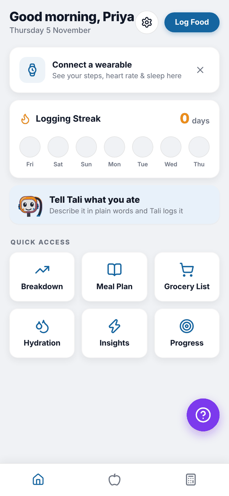

Totality Nutrition guide
Home and the tour
What every card on Home shows, how the first-time tour works, and what changes on Free.
Home is the first screen you see. It shows today at a glance and gets you to everything else.


The tour#
The first time you reach Home after onboarding, Tali walks you through it in 8 short steps: the calories card, telling Tali what you ate, your streak, Quick access, the Nutrition tab and the Calculator tab. A ring highlights each part. Tap Next to move on, Back to go back, or Skip tour at the top right.


At the end you see "You're all set!" with three first jobs, then the option to Add a Profile Photo. Tap Choose Photo and Save Photo, or Skip for now. The tour only shows once.
What's on Home#
Top bar. A greeting with your first name and today's date. The gear icon opens Settings, and Log Food opens your food log.
Calories card. "CALORIES TODAY" (or KJ TODAY) shows what you've eaten, what's left (or how much you're over, in red), and your target. Below are protein, carbs and fat against their targets. A Training day badge shows on calorie cycling training days, and an Adjusted badge when Adaptive Nutrition has lowered today's target.
Tali row. Inside the calories card. Tap Tell Tali what you ate to describe a meal in plain words. On Trial and Nutrition + AI Paid it also shows Tali's protein tip, for example "49g protein to go. About 17g at each of your next 3 meals gets you there." On Free it reads "Describe it in plain words and Tali logs it." It picks breakfast, lunch, dinner or snack from the time of day.
Connect a wearable. Shows today's steps, heart rate and sleep once a wearable is connected. Until then it prompts you to connect one. See Apple Health and Health Connect.
Logging Streak. Your streak in days and the last 7 days as dots. Tap it to see your badges. See Streaks.
Quick access. Six tiles: Breakdown, Meal Plan, Grocery List, Hydration, Insights and Progress.
Home on Free#
On Free, a "You're on Free" card shows how many of your 7 barcode scans are left this week, with a See plans button. Breakdown, Meal Plan, Grocery List and Insights show a small padlock. Tapping a locked tile opens the plans screen. Hydration and Progress stay open.


Before you have targets#
If you have no targets yet, the calories card isn't shown. You'll see a Tell Tali what you ate card instead. Set targets in the Calculator tab.

Questions#
Can I see the tour again?
Not from the app. It shows once, after your first onboarding. This guide covers everything it does.
Why is my calorie bar red?
You've gone over today's target. On pregnancy or breastfeeding targets it never turns red; it says "Minimum reached".
Where did Settings go?
It's the gear icon at the top of Home, next to Log Food.
Why don't I see Tali's protein tip?
The tip shows on the trial and on Nutrition + AI. On Free and on the Nutrition plan the row still lets you tell Tali what you ate.